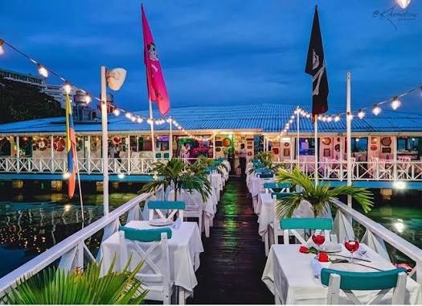
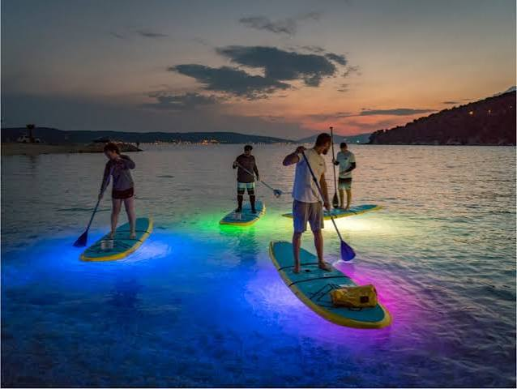

Dónde Comer
En este buscador, vas a poder filtrar por nombre, especialidad y área los mejores restaurantes de la isla
ver más

En este buscador, vas a poder filtrar por nombre, especialidad y área los mejores restaurantes de la isla
ver másEn San Andrés islas encontrarás platos innovadores con diversos frutos del mar
ver más
Conoce los tours y lugares que debes visitar para apreciar lo hermoso de San Andrés isla
ver más